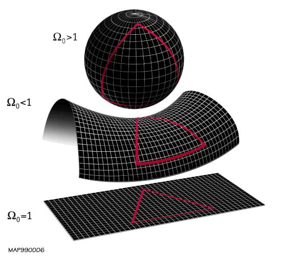
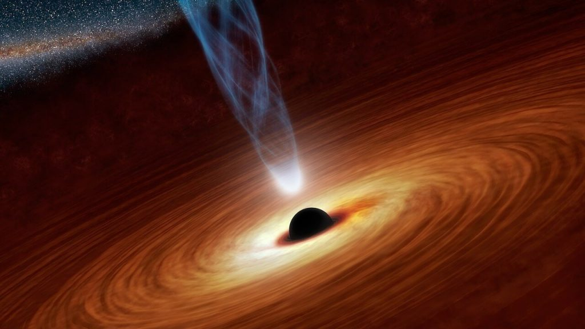

ဒီမေးခွန်းဟာ စကြာဝဠာ ကြီးက အဆုံး အစ ရှိသလား ဆိုတဲ့ မေးခွန်းနဲ့လဲ ဆက်စပ် နေပါတယ်။ အထူးသဖြင့် စကြာဝဠာ ကြီးရဲ့ အဆုံးက ဘယ်မှာလဲ ဆိုတဲ့ မေးခွန်းရဲ့ နောက်မှာ ဒီ ဆုံးသွားတဲ့ ဟိုမှာဖက်မှာ ဘာရှိလဲ ဆိုတဲ့ မေးခွန်းက ဆက်လာမှာပဲ ဖြစ်ပါတယ်။
အမှန် ပြောရရင် အခု အချိန်အထိ စကြာဝဠာရဲ့ အပြင်ဖက်မှာ ဘာရှိလဲ ဆိုတဲ့ မေးခွန်းကို ဘယ်သူမှ ရေရေရာရာ ကြေနပ်လောက်အောင် အဖြေ ပေးနိုင်ခြင်း မရှိသေးပါဘူး။
ဒီနေရာမှာ စကြာဝဠာရဲ့ အပြင်ဖက်မှာ ဘာရှိလဲ ဆိုတဲ့ မေးခွန်းကို မဖြေခင် “စကြာဝဠာ” ဆိုတာ ကို အရင် အဓိပ္ပါယ် သတ်မှတ်ဖို့ လိုလာပါတယ်။
ဒီနေရာမှာ စကြာဝဠာ ဆိုတာ ဘာသာရေး အရ သတ်မှတ်တဲ့ စကြာဝဠာ မဟုတ်ပဲ သိပ္ပံ အမြင်အားဖြင့် သတ်မှတ်တဲ့ စကြာဝဠာ ဖြစ်တယ် ဆိုတာ ကြိုတင် ပြောကြား လိုပါတယ်။ တနည်းအားဖြင့် ဒီ စကြာဝဠာဟာ တိုင်းထွာလို့ ရတဲ့ (measurable)၊ လေ့လာ စောင့်ကြည့်နိုင်တဲ့ (observable) စကြာဝဠာ (Universe) ဖြစ်ပါတယ်။
နောက်ပြီး ဒီ စကြာဝဠာဟာ လက်တွေ့ သက်သေ ပြနိုင်တဲ့ ရူပဗေဒ နဲ့ ဓါတုဗေဒ ဥပဒေသ တွေကို လိုက်နာတဲ့ စကြာဝဠာ ကို ဆိုလိုတာ ဖြစ်ပါတယ်။
အဲ့သည်တော့ အခုနက ပြောခဲ့တဲ့ စကြာဝဠာ ရဲ့ အဓိပ္ပါယ် ဖွင့်ဆိုချက်ကို ပြန်ကောက်လိုက် ရအောင်ပါ။ အကယ်၍သာ “စကြာဝဠာ ဆိုသည်မှာ အာကာသ (space) နှင့် အချိန် (time) ပျံ့နှံ့ သမျှ အတိုင်းအတာ အတွင်း တည်ရှိနေ သမျှ အရာ အားလုံး ပါဝင်သည်” လို့ အဓိပ္ပါယ် ဖွင့်လိုက်ရင် ဒီ စကြာဝဠာရဲ့ အပြင်ဖက်မှာ ဘာမှ မရှိနိုင် တော့ပါဘူး။ ဘာကြောင့်ဆို ဒီ စကြာ ဝဠာ ထဲမှာ ရှိရှိသမျှ အရာ အားလုံး ပါဝင်တာမို့ ပါ။
ဥပမာ သင့် စိတ်ကူးထဲမှာ အားလုံး ပါဝင်တဲ့ စကြာ ဝဠာ တစ်ခုကို ပုံဖေါ် ကြည့်လိုက်ပါ။ ဒီ စကြာ ဝဠာရဲ့ အပြင်ဖက်မှာ အရာ ဝတ္ထု တစ်ခုခု တွေ့ပြီ ဆိုရင် ဒီ အရာ ဝတ္ထု ဟာလဲ ဒီ စကြာ ဝဠာရဲ့ အစိတ် အပိုင်းပဲ ဖြစ်ရပါမယ်။ (အစကတဲက အရာ အားလုံး ပါတယ် လို့ အဓိပ္ပါယ် ဖွင့်ခဲ့တာလေ။) ဒီတော့ ဒီ စကြာဝဠာရဲ့ အပြင်ဖက်မှာ ဘာဆို ဘာမှကို ရှိလို့ မရ တော့ပါဘူး။
ဒါဆို မေးစရာ တခု ရှိလာ ပြန်ပါတယ်။ ကြယ်တွေ၊ ဂလက်ဆီတွေ၊ ဓါတ်ငွေ့ တိမ်တိုက် ကြီးတွေ၊ Black Hole တွေ အားလုံး ကုန်သွားပြီး ဘာဆို ဘာမှ (အက်တမ်းမြူမှုန် တစ်မှုန်တောင် မရှီတဲ့) တကယ့် အာကာသ ဟင်းလင်းပြင်ကြီး ရှီနေရင်ကော လို့ မေးစရာ ရှိလာ ပြန်ပါတယ်။ (ကတ်သီးကတ်သတ် မေးတယ်လို့ မထင်ပါနဲ့ ခင်ဗျာ။ ဒါဟာ ရူပဗေဒ နဲ့ သင်္ချာ ပညာရှင်တွေ စဉ်းစားတဲ့ ပုံစံပါ)။
ဒီ နေရာမှာ သာမန် လူတွေ အတွက် ဘာမှ မရှိတဲ့ အာကာသ ဟင်းလင်းပြင် ကြီးဟာ ရူပဗေဒ ပညာရှင် တွေအတွက်တော့ တစ်ခုခု ရှိနေပါတယ်။ ရူပဗေဒ အမြင်အရ ဒီ ဒေသမှာလဲ အာကာသ (space) နဲ့ အချိန် (time) တို့ ရှိနေပါ သေးတယ်။ ဒီတော့ အချိန်နဲ့ အာကာသ ကလဲ စကြာဝဠာရဲ့ အစိတ်အပိုင်း တစ်ရပ်ပဲ ဖြစ်တာမို့ ဒီ အာကာသ ဟင်းလင်းပြင် ကြီးဟာလဲ စကြာဝဠာရဲ အစိတ်အပိုင်း တစ်ရပ်ပဲ ဖြစ်ပါတယ်။
စကြာဝဠာ နဲ့ ပါတ်သက်လို့ နောက်တစ်ခု သိထားရမယ့် အချက်က သိပ္ပံ ပညာရှင်တွေ ပုံမှန် ပြောနေတဲ့ စကြာဝဠာဟာ observable universe လို့ခေါ်တဲ့ မြင်ရတဲ့၊ လေ့လာ လို့ ရတဲ့ စကြာ ဝဠာကို ဆိုလိုတယ် ဆိုတာပဲ ဖြစ်ပါတယ်။ ဒီ မြင်ရတဲ့ စကြာဝဠာဟာ အကျယ်အဝန်း အားဖြင့် အလင်းနှစ် ၉၀ ဘီလီယံလောက် ကျယ်ပါတယ်။ ဒီ မြင်ရတဲ့ စကြာဝဠာရဲ့ အပြင်ဖက်မှာ ဂလက်ဆီတွေ၊ ကြယ်တွေ၊ ဂြိုဟ်တွေ ရှိနေဦးမှာ ဖြစ်ပါတယ်။
အကယ်လို့ စကြာဝဠာ ကြီးကသာ အနန္တ မဟုတ်ဘူး၊ အတိုင်းအဆ အကန့်အသတ် ရှိနေတယ် ဆိုရင်တော့ စကြာဝဠာရဲ့ အပြင်ဖက်မှာ ဘာရှိလဲဆိုတဲ့ မေးခွန်းက အဓိပ္ပါယ် ရှိလာပါပြီ။ ဟုတ်တယ်လေ၊ အကန့်အသတ် ရှိတယ် ဆိုရင် တချိန်ချိန် မှာတော့ တနေရာရာမှာ အဆုံး သတ် သွားရမှာပေါ့။ ဒါဆို ဒီ စကြာဝဠာရဲ့ အဆုံးသတ် အပြင်ဖက်မှာ ဘာရှိလဲ ဆိုတဲ့ မေးခွန်းရဲ့ အဖြေဟာ စိတ်ဝင်စား စရာ ဖြစ်လာပါပြီ။
စကြာဝဠာရဲ့အခုံး (Curvature)
နက္ခတ် ပညာရှင် တွေဟာ အခုထိ စကြာဝဠာ ကြီးဟာ အလွန် အင်မတန် ကြီးမား ကျယ်ပြန့်တာလား (သို့မဟုတ်) အဆုံးအစ မရှိ အနန္တလား ဆိုတာကို သဲသဲ ကွဲကွဲ မသိကြ သေးပါဘူး။ ဒီတော့ စကြာဝဠာရဲ့ အရွယ်အစားကို ခန့်မှန်း နိုင်ဖို့ စကြာဝဠာရဲ့ အခုံး (curvature) ကို ကြည့်ရှု လေ့လာ ကြပါတယ်။ ဒီ အခုံးက စကြာဝဠာရဲ့ ပုံသဏ္ဍာန် ဘယ်သို့ ဘယ်ပုံ ရှိမလဲ ဆိုတာကို ပြောပြနိုင်လို့ပါ။
လက်ရှိ အထိတော့ တိုင်းထွာ ရရှိ သမျှ အချက်အလက် တွေအရ စကြာဝဠာ ကြီးရဲ့ Curvature ဟာ လုံးဝ ရေပြင်ညီ နီးပါး ညီညာ ပြန့်ပြူး နေတယ် လို့ ဆိုပါတယ်။ ဒီလိုသာ ညီညာ ပြန့်ပြူး နေတယ် (Flat ဖြစ်နေတယ်) ဆိုရင်တော့ စကြာဝဠာ ကြီးဟာ အဆုံး အစ မရှိတဲ့ အနန္တ ဖြစ်နေပါလိမ့်မယ်။ ဒါပေမယ့် ဒီနေရာမှာလဲ တခါ ပြဿနာ တစ်ခုက ရှိလာ ပြန်ပါတယ်။
စကြာဝဠာက ညီညာ ပြန့်ပြူး နေတယ် (တနည်းအားဖြင့် ပြားချပ်နေမယ်) ဆိုရင်တောင် သူ့ရဲ့ အတိုင်းအဆ က အဆုံး အစမဲ့ မဟုတ်ပဲ အကန့်အသတ် ရှိနေနိုင်ပါသေးတယ်။ ဘယ်လို မျိုးလဲ ဆိုတော့ ဒီ ပြားချပ်နေတဲ့ ပြင်ညီ စကြာဝဠာ ကြီးကို လိပ်လိုက်ပြီး ထိပ်နှစ်ဖက်ကို ဆက်ပေးလိုက်တဲ့ ပုံပါပဲ။ ဒိုးနတ်ပုံ (သို့) မုန့်လက်ကောက် ပုံ ဖြစ်ပါတယ်။ (ပုံတွင် ကြည့်ရန်)
ဒီလို ဒိုးနတ် ပုံ စကြာဝဠာမှာ ကျတော့ စကြာဝဠာ ကြီးဟာ ပြင်ညီ ဖြစ်နေပေမယ့် အဲ့သည် ပြင်ညီကိုယ်နှိုက်က ပြန်ကွေးပြီး နေပြန်ပါတယ်။ ဒီ စကြာဝဠာမှာ ဆိုရင် အရွယ် အစားအားဖြင့် အကန့်အသတ် ရှိပေမယ့် အဆုံး အစ ကျတော့ မရှိပြန်တော့ပါဘူး။ တခုရှိတာက ဒီလို စကြာဝဠာ မျိုးမှာ အရအပ်မျက်နှာ တစ်ဖက်ကို ဦးတည်ပြီး ခရီးထွက်ခဲ့မယ် ဆိုရင် တချိန်ချိန် မှာတော့ မူလ နေရာကို တပတ်လည်ပြီး ပြန်ရောက်လာ ရမယ် ဆိုတာပါပဲ။
ဒါပေမယ့် ဒီလို ဆိုလို့လဲ “စကြာဝဠာရဲ့ အပြင်ဖက်မှာ ဘာရှိလဲ” ဆိုတဲ့ မေးခွန်းရဲ့ အဖြေက ရှင်းမသွား သေးပါဘူး။ ဘာလို့လဲဆို ဒီ ဒိုးနတ်ကြီးရဲ့ အပြင်ဖက်မှာ ဘာရှိလဲ ဆိုတာကို အဖြေ မပေးနိုင် သေးလို့ပဲ ဖြစ်ပါတယ်။
သီအိုရီအမျိုးမျိုး
စကြာဝဠာ အပြင်ဖက်မှာ ဘာရှိလဲ ဆိုတာကို ပညာရှင်တွေ ကြေလည်အောင် အဖြေ မပေးနိုင် ပေမယ့် ဘာရှိမလဲ ဆိုတဲ့ သီအိုရီ အမျိုးမျိုးတော့ စဉ်းစား တွေးတော တင်ပြ ကြပါတယ်။ လူသာမန်တွေ အမြင်မှာ စိတ်ကူးယာဉ် ဆန်တယ် ပဲပြောပြော ဒီ သီအိုရီ တွေဟာ ရူပဗေဒ ပညာရှင်တွေ အကြားမှာ ရေးကြီးခွင်ကြယ် ဆွေးနွေး ငြင်းခုန် ကြတဲ့ သီအိုရီတွေ ဖြစ်ပါတယ်။ ဒါတွေထဲက လူအဆွေးနွေး များတဲ့ သီအိုရီ တွေကို တစ်ခုချင်း တင်ပြ ပေးပါမယ်။၁။ အပြိုင် စကြာဝဠာ အယူအဆ (Multiverse)
ဒီ သီအိုရီက အတော် လူကြိုက်များတဲ့ သီအိုရီ ဖြစ်ပါတယ်။ ဒီ သီအိုရီ အရ ကျွန်တော်တို့ရဲ့ စကြာ ဝဠာကြီးဟာ သူ့ထက် ကြီးမားတဲ့ ဆူပါ စကြာဝဠာ ကြီးထဲမှာ ဖြစ်တည်နေတယ်လို့ ဒီ သီအိုရီက ပြောပါတယ်။ ဒီ မဟာ စကြာဝဠာ ကြီးထဲမှာ ကျွန်တော်တို့ရဲ့ စကြာဝဠာဟာ ပြန့်ကား ကြီးမား လာနေတယ် လို့ ဆိုပါတယ်။ ဒီ မဟာ စကြာဝဠာ ကြီးထဲမှာ ကျွန်တော်တို့ စကြာဝဠာ လိုပဲ အခြား စကြာဝဠာ တွေဟာလဲ ရှိနေတယ်လို့ ဒီ သီအိုရီက ဆိုပါတယ်။စကြာဝဠာ တစ်ခုချင်း စီဟာ သူ့ အာကာသ နဲ့ အချိန် ပူပေါင်း (Space-time bubble) လေးထဲမှာ သီးသန့် ရှိနေပါတယ်။ အခြား စကြာဝဠာတွေဟာလဲ သူ့ အာကာသ-အချိန် ပူပေါင်းနဲ့သူ သီးသန့် ရှိနေမယ်လို့ ဆိုပါတယ်။ စကြာဝဠာ တစ်ခုနဲ့ တစ်ခုကလဲ ဆက်စပ်မှု မရှိပဲ သီးသန့် ဖြစ်နေမယ်လို့ ဆိုပါတယ်။
ဒီ စကြာဝဠာတွေ တစ်ခုနဲ့ တစ်ခုကို Wormhole တွေက ဆက်ပေးထားတယ်လို့ ဆိုပြီး wormhole တွေက တဆင့် စကြာဝဠာ တစ်ခုနဲ့ တစ်ခုကို ကူးသန်း သားလွာ နိုင်မယ်လို့ ဆိုပါတယ်။
၂။ စကြာဝဠာရဲ့ အပြင်ဖက်မှာ အခြား ဒိုင်မင်းရှင်း ရှိတယ်
ဒီ သီအိုရီ အရတော့ ကျွန်တော်တို့ရဲ့ စကြာဝဠာကြီးဟာ သူ့ထက် အဆင့်မြင့်တဲ့ ဒိုင်မင်းရှင်း ထဲကို ပြန့်ကား ဝင်ရောက် နေတယ် လို့ဆိုပါတယ်။ ကျွန်တော်တို့ရဲ့ စကြာဝဠာ ထဲမှာ အလျှား၊ အနံ နဲ့ အမြင့် ဆိုပြီး အာကာသ ဒိုင်မင်းရှင်း (Space dimensions) ၃ ခု ရှိပါတယ်။ နောက်ပြီး အချိန် ဒိုင်မင်းရှင်း ရှိပါသေးတယ်။ အခု သီအိုရီ အရ စကြာဝဠာရဲ့ အပြင်ဖက်မှာ ၄ ခုမြောက် အာကာသ ဒိုင်မင်းရှင်း ရှိတယ်လို့ ဆိုပါတယ်။ ကျွန်တော်တို့ရဲ့ စကြာဝဠာ ကြီးက ဒီ ၄ ခုမြောက် ဒိုင်မင်းရှင်း ထဲကို ပြန့်ကား ထွက်နေတာ ဖြစ်ပါတယ်။ ကျွန်တော်တို့က အာကာသ ဒိုင်မင်းရှင်း ၃ ခု ရှိတဲ့ အာကာသ မှာ နေတဲ့ သက်ရှိတွေ ဖြစ်တာမို့ ဒီ စတုတ္ထ ဒိုင်မင်းရှင်းကို သိနိုင်စွမ်း၊ မြင်နိုင်စွမ်း၊ နားလည်နိုင်စွမ်း မရှိပါဘူးလို့ ဆိုပါတယ်။၃။ Black Hole ထဲက စကြာဝဠာ
ဒီ သီအိုရီ ကလဲ အတော်လေး လူကြိုက်များတဲ့ သီအိုရီ ဖြစ်ပါတယ်။ ဒီ သီအိုရီ အရ Black hole ရဲ့ Singularity ကနေ ကျွန်တော်တို့ရဲ့ စကြာဝဠာကြီး ပေါက်ဖွား လာတယ်လို့ ဆိုပါတယ်။ ကျွန်တော်တို့ရဲ့ စကြာဝဠာ ကြီးဟာ ဒီ တွင်းနက်ကြီးရဲ့ အတွင်းထဲမှာ ပြန့်ကား ထွက်နေတာပါ။ တွင်းနက်တွေရဲ့ အတွင်းမှာ အာကာသ နဲ့ အချိန်ဟာ အရမ်းကို ပုံပျက် သွားတဲ့ အတွက် အာကာသ ပြန့်ကားထွက်ပြီး စကြာဝဠာ တစ်ခု ဖြစ်လာတယ်လို့ ဒီ သီအိုရီ အရ ဆိုပါတယ်။
၄။ အပြင်ဖက်မှာ ဘာမှ မရှိဘူး
ဒီ သီအိုရီ ကတော့ လက်ရှိ အများစု လက်ခံထားတဲ့ သီအိုရီ ဖြစ်ပါတယ်။ ဒီ သီအိုရီ အရ အခု စကြာဝဠာရဲ့ အပြင်ဖက်မှာ ဘာဆို ဘာမှ မရှိပါဘူး။ မရှိဘူး ဆိုတာ အချိန် နဲ့ အာကာသ ဒိုင်မင်းရှင်း တွေပါ မရှိတာပါ။ နတ္ထိ မရှိခြင်း ကို ဆိုလိုတာပါ။ အဲသည်အတွက် စကြာဝဠာ ရဲ့ အပြင်ဖက်မှာ ဘာရှိလဲ ဆိုတဲ့ မေးခွန်းအတွက် အဖြေ မရှိ တော့ပါဘူး။ ဘာလို့ဆို ဒီ သီအိုရီ အရ အပြင်ဖက် ဆိုတာကို မရှိတော့ လို့ပဲ ဖြစ်ပါတယ်။၅။ စကြာဝဠာဟာ အဆုံး အစ မရှိ အနန္တ ဖြစ်တယ်
ဒီ သီအိုရီ အရတော့ ကျွန်တော်တို့ရဲ့ စကြာဝဠာ နဲ့ အာကာသ ဟင်းလင်းပြင်ဟာ အဆုံး အစ မရှိပါဘူး။ အဆုံး အစ မရှိ တဲ့ အတွက် အနား သတ်လဲ မရှိပါဘူး။ ဒါ့ကြောင့် အပြင်ဖက် ဆိုတာလဲ မရှိတော့ ပါဘူး။အမြင်ပေါ်မူတည်ပါတယ်
စကြာဝဠာ လို့ ပြောလိုက်ရင် လူအများစုရဲ့ စိတ်ထဲမှာ ဘောလုံးကို အလုံးကြီး မြင်ကြပါလိမ့်မယ်။ အဲ့သည် ဘောလုံးကြီး ထဲမှာ ကြယ်တွေ၊ ဂြိုဟ်တွေ၊ ဂလက်ဆီတွေ၊ Black holes တွေ၊ နောက်ပြီး ဓါတ်ငွေ့ တိမ်တိုက်တွေ နဲ့ Dark Matter, Dark energy ဆိုတာတွေ ရှိပါမယ်။ နောက်ပြီး အခုထိ ရှာမတွေ့ သေးတဲ့ စကြာဝဠာ ထဲက ထူးထူး ဆန်းဆန်း အရာ ဝတ္ထု တွေလဲ ရှိကြမှာပါ။ သင့်အနေနဲ့ ဒီ စကြာဝဠာ ကြီးကို အပြင်ကနေ ကြည့်ပြီး ကမ္ဘာလုံးကြီး လိုမျိုး ပုံဖေါ်ကြည့်မိကောင်း ကြည့်မိ ပါလိမ့်မယ်(ကျွန်တော်ကတော့ ဘယ်လို တွေးတွေး အဲ့လို အလုံးကြီးပဲ ပေါ်နေတယ်ဗျ။)ဒါပေမယ့် တကယ်တမ်းက စကြာဝဠာကြီး ဖြစ်တည်နေဖို့ ဆိုတာက အပြင်ကနေ ကြည့်တဲ့ မြင်တဲ့သူ၊ ပြင်ပက အမြင် မလိုအပ်ပါဘူး။ စကြာဝဠာက သူ့ဟာသူ ဖြစ်တည် နေတာပါ။ စကြာဝဠာ မှာ အလျှားရယ်၊ အနံရယ်၊ အမြင့်ရယ် ဆိုတဲ့ ဒိုင်မင်းရှင်း ၃ ခု ရှိပါမယ်။ နောက်ပြီး အချိန် ဒိုင်မင်းရှင်း ရှိပါမယ်။
ဒီနေရာမှာ သင်္ချာ သဘောအရဆို စကြာဝဠာဟာ “အပြင်ဖက်” ဆိုတာ မလိုအပ်ပဲ သူ့ဟာသာ သီးခြား ရပ်တည် နေနိုင်တဲ့ အရာ တစ်ခု ဖြစ်ပါတယ်။ အကယ်လို့ သင်က စကြာဝဠာ ကြီးကို ဘောလုံးကြီး တစ်လုံး လို မြင်ပြီး ဒီ ဘောလုံးကြီးဟာ ဘာမှ မရှိတဲ့ ဟင်းလင်းပြင် ကြီးထဲမှာ ပေါလောကြီး မြောနေတယ်လို့ မြင်ယောင် နေတယ်ဆိုရင် သင်ဟာ သင့်စိတ်ကို သင်လှည့်စား နေတာပဲ ဖြစ်ပါတယ်။
လူပြိန်းတွေး တွေးကြည့်ရင်တော့ အကန့်အသတ် ရှိတဲ့ စကြာဝဠာရဲ့ အပြင်ဖက်မှာ ဘာမှ မရှိဘူး ဆိုတာ ဘယ်လိုမှ လက်ခံလို့ မရတဲ့ အမြင်တစ်ခု ဖြစ်နေပါတယ်။ ဒီနေရာမှာ ဘာမှ မရှိဘူး ဆိုတာထက်ကို အပြင်ဖက် ဆိုတာကို မရှိတာပါ။
ရူပဗေဒ အမြင်မှာတော့ ဒီ စကြာဝဠာ ရဲ့ အပြင်ဖက်ဟာ သင်္ချာနည်းအရ အဓိပ္ပါယ် သတ်မှတ် ထားခြင်း မှရှိပါဘူး (Mathematically undefined)။ ဒီတော့ ရူပဗေဒ အမြင်အရဆို “စကြာဝဠာရဲ့ အပြင်ဖက်မှာ ဘာရှိလဲ” ဆိုတဲ့ မေးခွန်းဟာ “အပြာရောင်ရဲ့ ‘အသံ’ က ဘာသံလဲ” ဆိုတဲ့ မေးခွန်းလို ပဲ အဓိပ္ပါယ် မှရှိပါဘူး။
ဒီ အမြင်က စိတ်ရှုပ်စရာ ကောင်းတယ်၊ နားလည်ဖို့ ခက်ခဲတယ် ဆိုရင်လဲ ဘာမှ စိတ်ပူစရာ မရှိပါဘူး။ စကြာဝဠာ နဲ့ သက်ဆိုင်တဲ့ ဖြစ်စဉ်တွေကို ကိုယ်စားပြု နိုင်ဖို့ အလွန် သိမ်မွေ့ပြီး ခက်ခဲတဲ့ သင်္ချာ ညီမျှချင်းတွေ ဖော်ထုတ် ကြတယ် ဆိုတာကလဲ ဒီလို နားလည်ရ ခက်ခဲတဲ့ သဘာဝ တွေကို နားလည်နိုင်အောင်ပဲ ဖြစ်ပါတယ်။ ယခုခေတ် နက္ခတ် ပညာဟာ သင်္ချာ ညီမျှခြင်း တွေကို အသုံးချပြီး စဉ်းစား တွေးတောဖို့ ခက်ခဲလွန်းတဲ့ သဘော သဘာဝ တွေကို နားလည်ပြီး လေ့လာနိုင်အောင် ဖန်တီးပေးတဲ့ ပညာရပ်ပါ။
သင်္ချာ ညီမျှချင်း တွေနဲ့ ကိုယ်စားပြု (Mathematical Model) ထားတဲ့ စကြာဝဠာ ကြီးမှာ တကယ်တော့ အပြင်ဖက် ဆိုတာ မရှိပါဘူး ဆိုတာ တင်ပြလိုက်ရ ပါတယ်။
Reference:
Is there anything beyond the universe? | Space
5 Interesting Theories About What Lies Beyond Our Universe | Medium